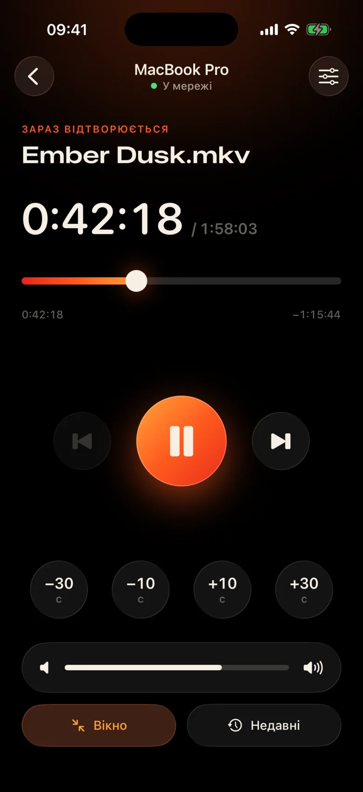
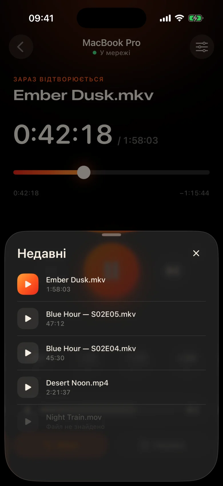
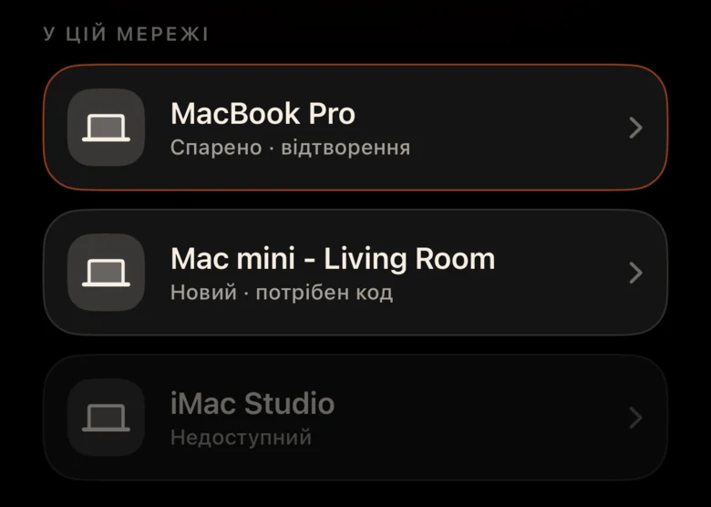
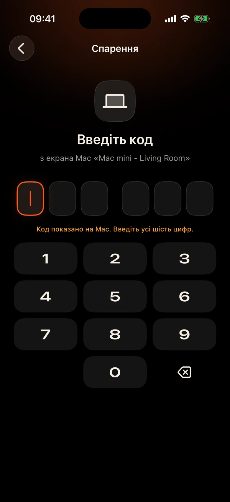

Mac знаходиться в іншому кінці кімнати
Він підключається до проектора на стіні. Кожна пауза означає встати, знайти трекпад у темряві та примружитися на крихітну панель керування.
Kinrox: торкніться паузи на телефоні в руці.
Kinrox відтворює будь-яке відео на вашому Mac — і перетворює iPhone на пульт дистанційного керування. MacBook на проекторі, ви на дивані: зробіть паузу, перейдіть на 10 секунд назад, зменшіть гучність або почніть наступну серію, не відриваючись від ковдри.


Він підключається до проектора на стіні. Кожна пауза означає встати, знайти трекпад у темряві та примружитися на крихітну панель керування.
Kinrox: торкніться паузи на телефоні в руці.
Шепіт в одній сцені, вибухи в наступній — а в сусідній кімнаті вже хтось спить.
Kinrox: повзунок гучності прямо під великим пальцем.
Веб-панелі з IP-адресами та паролями, вкладка браузера, яка засинає, кнопки, створені для столу, а не для дивана.
Kinrox: знаходить ваш Mac самостійно, з’єднується за допомогою одного коду.

Великі цілі, темна тепла тема та легкий дотик під час кожного натискання. Ви можете використовувати його, не відводячи погляду від плівки.
Кнопки досить великі, щоб влучити в них навіть напівсонним.
Пропустив рядок? Один дотик назад. Пропустіть інтро з двома.
Власна гучність Kinrox, від 0 до 100. Системна гучність Mac залишається незмінною.
Попередній і наступний файли з тієї ж папки в порядку Finder.
Виберіть те, що ви дивилися раніше — воно відкривається на Mac.
Перетягніть часову шкалу до будь-якого моменту, перемикайтеся на весь екран з дивана.
Ні IP-адрес, ні паролів, ні облікового запису. Після першого коду ваш iPhone повторно підключається самостійно.
Перетягніть файл у Kinrox або натисніть ⌘ O. Віддалений сервер увімкнено за замовчуванням.
Kinrox з’являється самостійно, коли обидва пристрої під’єднані до однієї мережі Wi‑Fi.

Mac показує код, який живе дві хвилини. Три неправильні спроби – і все пропало.


Alex’s iPhone хоче керувати Kinrox. Введіть цей код на телефоні.
 Код діє ще 1:47
Код діє ще 1:47
Відео є інтерфейсом. Тонкий шар скла з'являється, коли вам це потрібно, і ховається через три секунди.

Створено на основі libmpv, двигуна за mpv і IINA. Виберіть вбудований або зовнішній звук і субтитри. VideoToolbox обробляє апаратне декодування.
Kinrox вибудовує відео в папці та починає наступне, коли закінчується епізод — «2» перед «10», як у Finder.
Клавіші ⏯ на клавіатурі, Центр керування та «Зараз грає» керують Kinrox. До 20 останніх файлів чекають на початковому екрані.
Ваші Mac і iPhone обмінюються командами відтворення безпосередньо через локальну мережу. Ваші відео залишаються на Mac.
Виявлення через Bonjour, підключення тільки з власної підмережі. Відмовлені публічні адреси та стільниковий зв’язок.
Кожна команда передається в зашифрованому каналі. Жетони сполучення живуть у Keychain на обох пристроях.
X25519HKDF-SHA256ChaCha20-Poly1305Немає облікових записів або аналітики використання. Mac щодня перевіряє загальнодоступний канал оновлень без унікальних ідентифікаторів або профілювання системи. На цьому веб-сайті немає аналітики та файлів cookie.
Пульт дистанційного керування бачить заголовки та тривалість, але ніколи шляхи до файлів. Відкриття останнього файлу вирішено на Mac.
Kinrox написано в Swift 6 і SwiftUI поверх libmpv. Кожен рядок плеєра, пульта дистанційного керування та протоколу на GitHub.
Збірка з джерела# Xcode 26.5, XcodeGen and mpv from Homebrew
brew install xcodegen mpv pkg-config
git clone https://github.com/awaik/Kinrox.git
cd Kinrox
cp -n Config/Signing.local.xcconfig.example \
Config/Signing.local.xcconfig
# Set your team: docs/runbooks/RUNBOOK-BUILD-AND-SIGNING.md
./Scripts/check-env.sh
./Scripts/generate.sh
xcodebuild -workspace Kinrox.xcworkspace \
-scheme PlayerMac -configuration Debug \
-destination 'platform=macOS,arch=arm64' \
-derivedDataPath DerivedData build
open DerivedData/Build/Products/Debug/Kinrox.appВідтворення та дистанційне керування працюють без доступу до Інтернету, коли Mac і iPhone спільно використовують мережу Wi‑Fi. Mac використовує HTTPS для щоденної перевірки оновлень і завантажує оновлення, коли ви вирішуєте його встановити.
так Kinrox відтворює все, що показує ваш Mac — проектор, телевізор через HDMI або дисплей, підключений за допомогою AirPlay.
Macs із Apple silicon на macOS 14 Sonoma або новішої версії та iPhones на iOS 17 або новішої версії. Intel Macs ще не підтримується.
так Кожен iPhone з’єднується один раз із власним кодом; одночасно можна підключити до чотирьох пультів. Ви можете відкликати будь-який із них у налаштуваннях плеєра.
так На Mac використовуйте кнопку «Аудіо та субтитри» або меню «Аудіо та субтитри». Виберіть вбудовані треки, знайдіть зовнішні файли у вкладених папках або вимкніть субтитри. Kinrox може запам'ятати ваш вибір для наступного епізоду.
нічого Kinrox є безкоштовним і відкритим кодом під GNU GPL v3.
Kinrox для Mac і iPhone. Безкоштовний, із відкритим вихідним кодом і створений для кіновечорів.